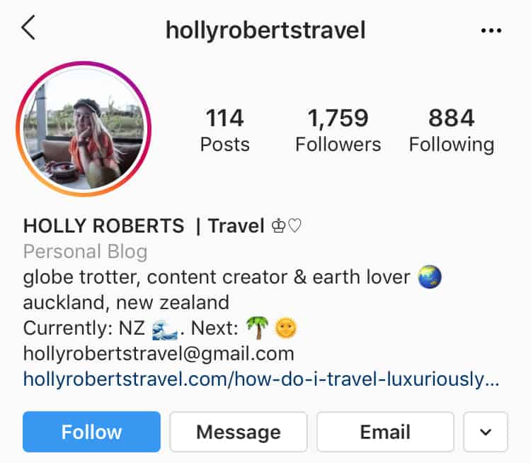
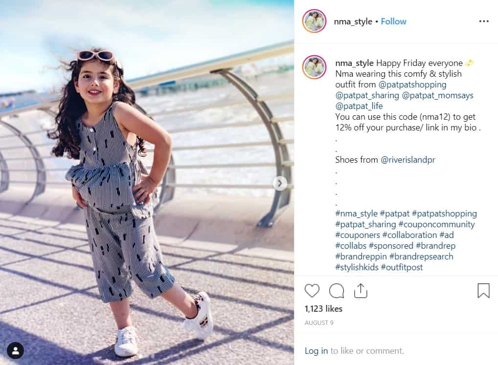
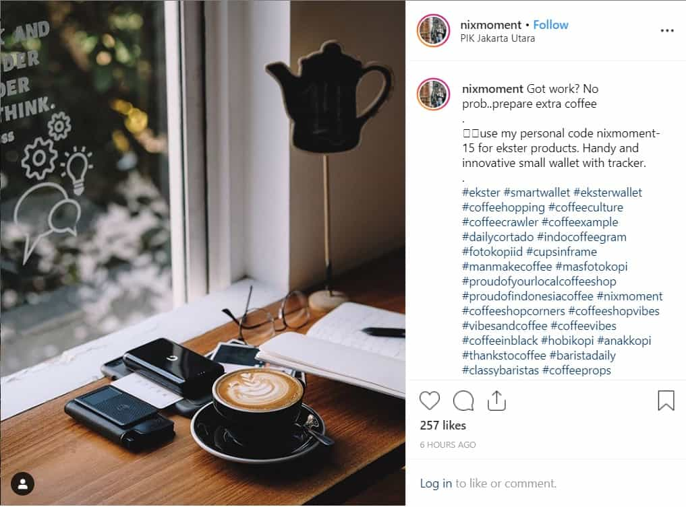
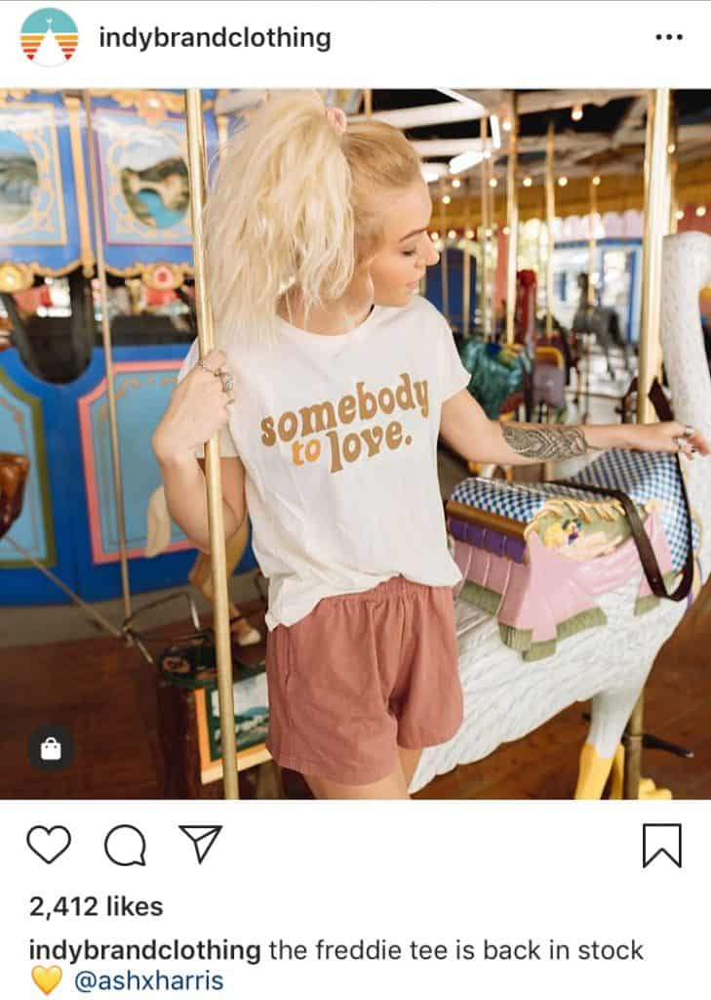
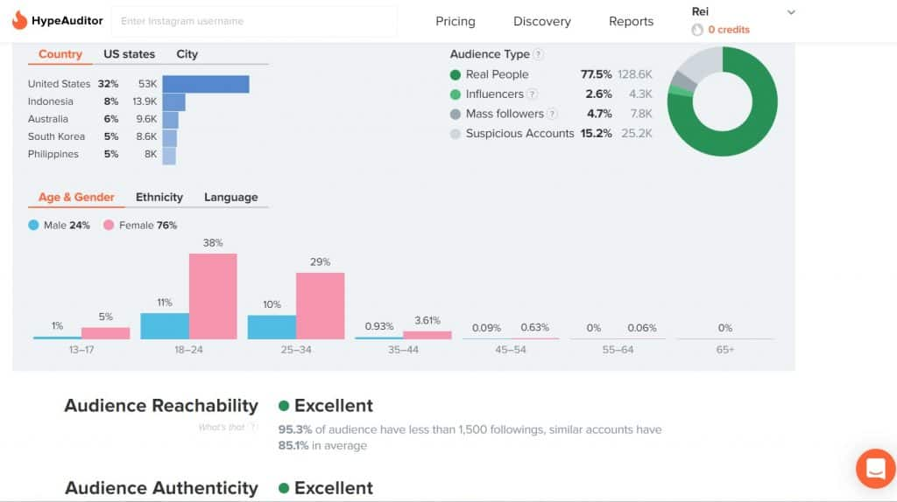
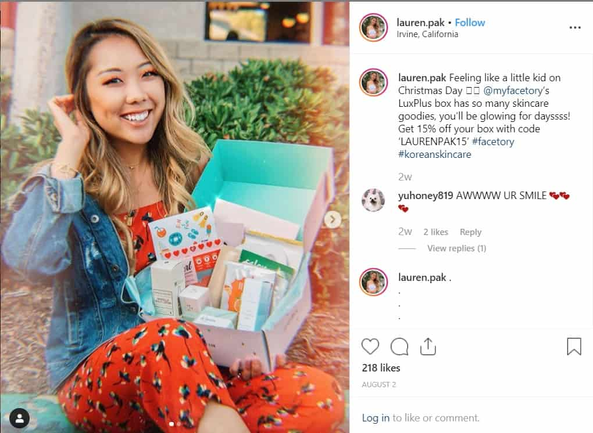
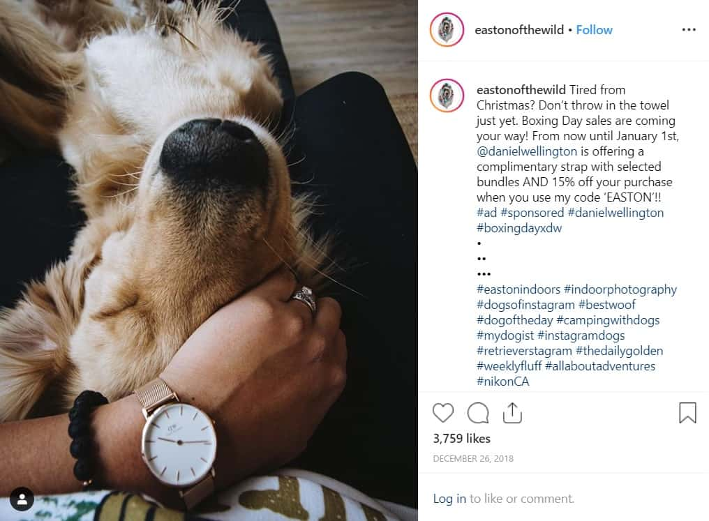
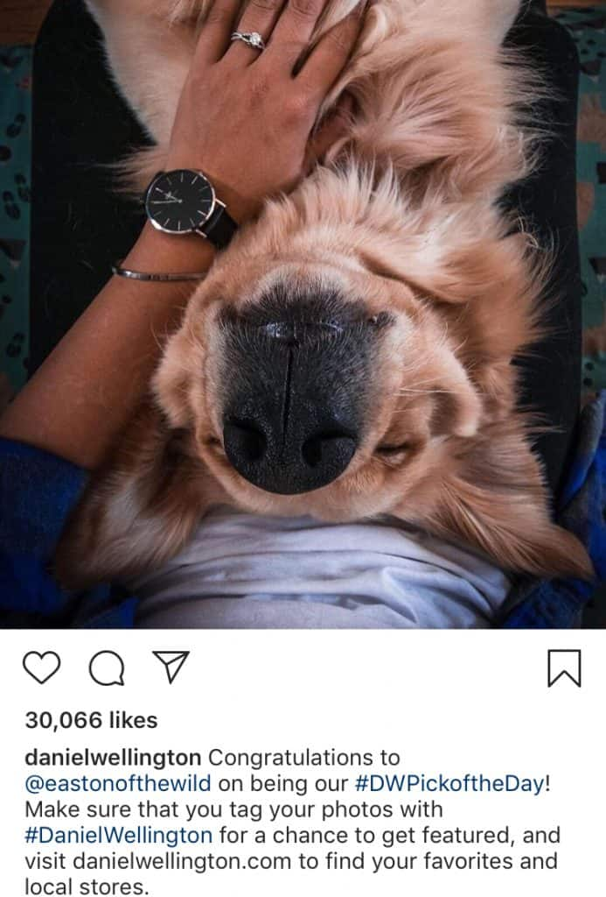

Instagram provides plenty of opportunities for brands to reach their target audience. One of which is through Instagram influencers.
When you think of Instagram influencers, you likely picture celebrities. Or users with flawless aesthetics and millions of followers. But those are not the only influencers on the platform.
Some micro-influencers have average follower counts. However, they still hold a strong influence over their audience. In fact, micro-influencer marketing is growing.
Why?
Because their audience trusts their opinions. Their audience believes that they give a more honest opinion than celebrities or big Instagram influencers.
According to a report from CreatorIQ, micro-influencers have 2.4% engagement rate which is 1.7% higher than mega influencers.
Thinking of tapping influencers to build your brand presence? In this article, we’re going to discuss the benefits of investing in small Instagram influencers. Plus a few tips to look for the right micro-influencers.
Who Are The Small Instagram Influencers?
First and foremost, social media influencers have gained credibility in a particular industry. To be an Instagram influencer, one should be an expert in their niche. They continue to talk about their industry. Either through pictures, videos, Stories, and so on.
Most importantly, they have a considerable number of social following. These audiences trust and value their opinions.
Here are a few things they can do for your brand:
- Spread awareness. They lend their voice to make a large audience listen.
- Increase brand visibility
- Drive sales
Individuals with 1.000 to 50,000 followers are considered micro-influencers. Since these influencers have a smaller following, they connect on a deeper level.
How come?
Because a smaller audience allows for more personal interaction. With that said, their audience sees them as peers. This makes them more effective in marketing.
Remember, consumers are more likely to trust recommendations from peers.
Collaborating with a small Instagram influencer gives you access to a more engaged audience. This means they won’t simply swipe by your content.
Why Choose Small Instagram Influencers?
The idea behind Instagram influencer marketing is relaying a message to influencers. These influencers will then promote it, reaching a wider audience.
However, brands shouldn’t only look at an Instagram influencer’s follower count. You should really consider investing in micro-influencers.
You might find this move counterintuitive. Especially if your goals are to boost sales and increase brand awareness. But there are plenty of reasons why you should.
Fewer Followers Seem More Trustworthy
For starters, Instagram users find nano- and micro-influencers more trustworthy. Secondly, your brand’s message will spread more naturally.
Why?
Because these small Instagram influencers post more curated content. Users believe that these influencers are not paid millions to endorse a particular brand, making their content more authentic.
Tapping into micro-influencers is one of the best marketing strategies at the moment.
High Engagement Rates
In Instagram influencer marketing engagement rate is crucial. Engagement rate is measured through the number of likes, views, comments, and shares.
When the rate is high, it means the audience is actively interacting. If low, the audience is not responding. According to studies, micro-influencers have high engagement rates.
In fact, a user with 1,000 followers has 8% engagement while an Instagram influencer with 100,000 followers only has 1.5% engagement rate.
Why?
Because micro-influencers interact with their audience more. High interaction means a more intimate connection with their followers. This makes them relatable and believable.
Take a look at @hollyrobertstravel. She has a total of 1,759 followers.

Her average likes range from 350 to 480 and her comments reach up to 200. With that said, she has a very high engagement rate.
When a micro-influencer promotes your product, their audience will think that they are actively advocating for your brand.
As a result:
- It boosts brand awareness
- Drive more product sales
Niche Market
Small Instagram influencers are perfect marketing channels for niche-specific brands. Unlike macro-influencers, micro-influencers have very specific niche markets.
Marketers prefer to work with small influencers because they have a more focused and targeted audience.
Thinking of collaborating with a small Instagram influencer? First of all, their personality and interest should fit your brand.
Secondly, think about your target audience.
If you’re considering a collaboration with a small Instagram influencer, you must first consider your target audience.
- Who is your audience following?
- What content will resonate best with them?
- Will this type of content urge them to buy?
Tip: Find a micro-influencer who caters to your specific target audience.
Say, you’re a clothing brand that focuses on kids clothing. Look for small Instagram influencers whose niche audience are moms or parents.
For example, Princess Nma of @nma_style has 33,200 followers. Her feed is dedicated to posting about her kids. She also posts their dresses, toys, and accessories. Collaborating with her will put your products in front of their niche audience.

High Conversion Rate
According to a study, 72% of users make a purchase decision when an influencer talks about a product. This isn’t surprising. Why? Because consumers trust customer reviews and recommendations.
For this reason, tapping the power of nano- and micro-influencers can lead to higher conversion rates.
These small Instagram influencers are like common people. Their content is more relatable and trustworthy. Therefore, their endorsement seems more genuine and authentic.

For this reason, the audience is more likely to make a purchase.
In fact, according to a study, small influencers can generate 22.2x higher conversion rates each week as compared to other types of influencers.
Ready to work with a micro-influencer?
How To Look For Small Instagram Influencers #1: Know Your Audience
First of all, you must know who your audience is. This means understanding their demographics and buying behavior.
In doing so, you can look for a small Instagram influencer whose audience fall in your target market. Take a look at these factors:
- Age
- Gender
- Location
- Interest/Hobbies
- Industry
Tip: Create a buyer persona. Additionally, look at who your audience is following – who they like.
You can’t randomly pick a micro-influencer. Not all of them can help you with your brand goals.
Remember, micro-influencers have a particular passion or industry. They attract a niche-specific audience. Therefore, look for small influencers whose interests and audience fit your brand.
How To Look For Small Instagram Influencers #2: Do A Thorough Keyword Research
Searching for hashtags and keywords that are relevant to your brand will point you to potential small influencers.
Identify accounts and pages with high engagement rate.
Here are a few tips to get you started:
- Write down keywords that are relevant to your industry
- Search for multiple hashtags.
- Compile a list of potential small Instagram influencers
Tip: Content with high engagement are ranked at the top. This is a great way to find quality micro-influencers.
How To Look For Small Instagram Influencers #3: Pay Attention To Your Fans
Sometimes, you won’t even need to look far! Your current Instagram followers could be your influencer partner!

Another option is to consider brand mentions. Look for users who talked about your brand on Instagram.
These people are already fans of your brand. They’ll be more willing to promote your products. For instance, you can send them a free product sample. Or you can give them other perks.
Tip: Make sure to properly screen your micro-influencer fan before collaborating.
How To Look For Small Instagram Influencers #4: Reach Out To Bloggers
Bloggers offer a plethora of Instagram influencer marketing opportunities. There’s a high chance that they also have a considerable number of following on Instagram.

How do you find the right blogger?
A simple Google search will do. Just make sure to look for niche-specific blogs. In doing so, you’ll find bloggers who’ll fit your Instagram influencer marketing needs.
How To Look For Small Instagram Influencers #5: Evaluate The Micro-Influencer
What are their values and principles?
When collaborating with an Instagram influencer, they’ll be representing your brand. That’s why their values and principles should match yours.
Say you want to promote vegan products. Your Instagram influencer marketing strategy will be useless if you collaborate with an influencer who isn’t vegan.

Are their followers active and engaged?
High engagement rate is crucial in Instagram influencer marketing. So of course, you’ll have to check their engagement rate.
But your evaluations shouldn’t end there. Make sure that their followers are real accounts. It’s unfortunate, but some influencers buy fake followers.
If the Instagram influencer has more fake followers than real ones, then your collaboration is a bust.
You can use tools, like Hype Auditor, that shows a quick summary of a user’s Instagram account. It also shows whether a user has a fake following.

Who are their past and current partners?
It doesn’t look good for an influencer to be promoting competing brands. Therefore, take a look at who and what they are promoting.
Are they already collaborating with your competition? If so, it’s time to move on and look for another.
How To Look For Small Instagram Influencers #6: Connect With Your Chosen Micro-Influencer
Macro-influencers are already veterans to the game. However, small Instagram influencers still act as a casual user. For this reason, you need to establish a connection.
But how?
- Tap the follow button. In doing so, you’ll get your brand noticed. Additionally, it’s also an indication that you like and respect their content.
- Like and comment on their post. To establish a genuine connection, make sure you know what they’re posting about. For example, leave a comment to open discussion. However, do not promote your product or services yet!
- Be patient. It’s a great Instagram marketing strategy to establish a good rapport first before offering a collaboration. If you show interest, they’re bound to notice you!
Once you’ve established a connection, it’s time to send a direct message. Be professional when offering a collaboration. Here are a few tips:
- Respect their creativity and voice
- Offer something that will help them with their own goals.
- Help them grow.
Few Ideas For Collaborating With Small Instagram Influencers
Use Discount Codes
Consumers love sales and discounts!
Therefore, let your partner micro-influencer share a discount code. This is an excellent Instagram influencer marketing strategy because it’ll catch their audience’s attention.

Why? Because small Instagram influencers have a more focused audience. They can create content that will appeal to their audience. For this reason, their followers are more encouraged and motivated to buy.
As a result, your sales are likely to increase.
Product Reviews
Promoting your products will put your brand in front of the audience. However, this won’t convince them to make a purchase.
So how do you influence their buying decision? By asking your influencer partner to write an honest product or service review.
Suggestions and reviews of influencers greatly affect consumer behavior. These reviews are considered authentic and unbiased.
Here are a few tips:
- Send product samples
- Gift them with a voucher for your services
- Ask them to review. Either they post a photo, video, or write a blog.
- Encourage your influencer partner to give an honest review. This means you should be prepared for positive and negative feedback.
Take for example Glossier. They are known to collaborate with small Instagram influencers.
In this post, Aqsa, who has 3,906 followers, reviewed their Cloud Paint product. From the time it was posted, it quickly garnered 377 likes and 93 comments.

Utilize User-Generated Content With Branded Hashtag
Another great Instagram marketing strategy is creating a branded hashtag. This helps boost brand awareness. Secondly, your followers and fans will easily find your products or content.

That why encourage followers to use it. When collaborating with micro-influencers, ask them to post a photo or video of your product using the tag.
Want to take this strategy further?
- Gift micro-influencers with products. Ask them to promote your product using a branded hashtag.
- Collaborate with a micro-influencer for an Instagram contest. One of the rules should be to use the branded hashtag in their post.
- Give the winners a worthwhile prize. For example a free product or discount voucher.
- Feature winning entries on your account.
Look at this post from @eastonofthewild. They added a branded hashtag. Plus they also shared a discount code. This boosts brand awareness and increases sales.

In Conclusion
Instagram influencer marketing is here to stay.
However, you don’t have to break your bank account to collaborate with celebrities or macro-influencers. Small Instagram influencers offer plenty of marketing opportunities.
Micro-influencers have built a credible reputation. Their audience trusts them. Most importantly, they connect with their audience on a more personal level.
Follow the tips we’ve listed to look for the right small Instagram influencers for your campaign. From there, you can come up with effective marketing strategies.


3 Comments